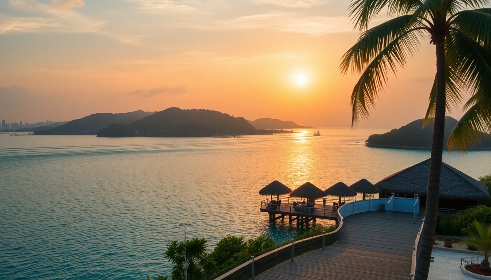

Where to Stay in the Maldives: Best Atolls & Resorts for Every Budget

I landed in Malé on a Tuesday afternoon, and within an hour I understood why people obsess over this country. But "the Maldives" isn't one place—it’s a chain of 26 atolls, each with a different price tag, vibe, and access to marine life. After bouncing between four atolls on one trip, here’s what I learned about where to actually stay, depending on what you want to spend and what you want to do.
What’s the deal with Malé—should you stay here?
Most people land in Malé and immediately take a seaplane or speedboat to their resort. But Malé itself is worth a night if you arrive late or want a budget-friendly first taste of the country. It’s dense, noisy, and nothing like the postcard photos—but it’s real.
- Hotel Jen Malé is the most practical mid-range option. Clean rooms, decent buffet, and a rooftop pool. We stayed one night before our seaplane.
- Sala Boutique Hotel is smaller but quieter, tucked off a side street near the fish market. Good for a layover.
- Skip the overpriced tourist cafes on Boduthakurufaanu Magu. Instead, eat at Sea House Restaurant for fresh tuna curry and roti.
- Malé Local Market (the fish market specifically) is worth an hour. Smells strong, but you’ll see what locals actually eat.
Honestly, unless you have a very early seaplane, one night in Malé is enough. The real Maldives starts when you leave the capital.
Which atoll is best for a first-time visitor on a mid-range budget?
For most first-timers, North Malé Atoll or South Malé Atoll are the easiest picks. They’re close to the airport (20-45 minutes by speedboat), so no expensive seaplane transfer. Resorts here range from $250–$600 a night, which is mid-range by Maldives standards.
- Coco Palm Bodu Hithi in North Malé Atoll. We stayed in a water villa here—solid value, great house reef for snorkeling, and the spa is legit.
- Anantara Veli in South Malé Atoll is adults-only and more laid-back. The overwater bungalows sit above a lagoon that’s perfect for beginner snorkelers.
- Sheraton Maldives Full Moon Resort is family-friendly and has a long sandbank. The buffet gets repetitive after three days, but the kids’ club is excellent.
The trade-off: these atolls are busier. You’ll see other resorts from your deck, and the reefs are more worn than in remote atolls. But for a first trip, the convenience beats the isolation.
Is Baa Atoll worth the extra money for the manta rays?
Yes, but only if you time it right. Baa Atoll is a UNESCO Biosphere Reserve, and between May and November, manta rays and whale sharks congregate in Hanifaru Bay. I went in June and saw 12 mantas feeding in a single session. It’s the kind of wildlife encounter you can’t replicate in the more developed atolls.
- Amilla Maldives is the top-end pick. The villas are huge, the food is excellent (the Japanese restaurant is a highlight), and they run daily manta excursions.
- Dusit Thani Maldives is a step down in price but still luxurious. The house reef is one of the best in Baa—I saw a turtle within five minutes of snorkeling from the beach.
- Finolhu Baa Atoll has a retro-chic vibe and a long sandbank bar. It’s more party-oriented, so skip it if you want quiet.
Baa is expensive. Resorts start around $600 a night and go up to $2,000+. The seaplane transfer from Malé costs about $500 round trip. But if you care about marine life, this is the atoll to prioritize.
What makes Ari Atoll different from the others?
Ari Atoll is the sweet spot for divers and mid-range luxury. It’s farther from Malé (seaplane required), but the house reefs are healthier, and the resorts are more spaced out. We spent four nights at Lily Beach Resort in South Ari Atoll, and it was the best snorkeling of the trip—whale sharks, eagle rays, and a massive coral garden.
- Lily Beach Resort is all-inclusive, which takes the sting out of the high room rate. The food is good (the Thai restaurant is better than the main buffet), and the spa is on a private island.
- Constance Moofushi is smaller and more intimate. The water villas have glass floors, and the dive center is top-notch.
- Sun Island Resort & Spa is a budget-friendly option in South Ari. It’s older and the rooms are dated, but the house reef is still strong, and the price is often half of neighboring resorts.
Ari is quieter than Malé Atoll but more developed than Baa. It’s a good middle ground if you want good diving without the UNESCO crowds.
Should you bother going all the way to Addu Atoll?
Addu Atoll is the southernmost inhabited atoll, and it’s a different world. No seaplanes—you fly into Gan International Airport on a domestic flight from Malé (about 90 minutes). The vibe is less resort-polished and more local. If you want to escape the "resort bubble," this is where to go.
- Equator Village is a converted British RAF base. It’s quirky, not luxurious, but the staff are incredibly friendly and the beach is empty. We were the only guests on the sand one afternoon.
- Addu City (the main settlement) has a few small guesthouses like Maradhoo Guest House for under $100 a night. You can rent a bicycle and explore the island, eat at local cafés, and see a side of the Maldives most tourists miss.
- Sharks Bay on the west side is a known spot for nurse sharks and blacktip reef sharks. Snorkeling there felt like swimming in a documentary.
Addu is not for honeymooners wanting overwater bungalows. It’s for travelers who want to see the real Maldives—fishing villages, local mosques, and empty beaches—without the resort markup. Budget $50–$150 a night for guesthouses.
When is the best time to visit the Maldives?
The dry season (November to April) is the most popular—blue skies, calm seas, and high prices. I went in June (wet season), and while I had some rain, the trade-off was fewer crowds and cheaper rooms. The manta rays in Baa Atoll are only reliably there during the wet season.
- December to March is peak season. Expect $400+ per night for mid-range resorts.
- May to November is the wet season. We paid $280 a night at Lily Beach in June. Rain usually comes in short bursts.
- January and February are the driest months but also the most expensive.
If you’re on a budget, aim for May, June, or September. Just pack a rain jacket and flexible plans.
FAQ
Is it worth staying in a guesthouse instead of a resort? Yes, if you’re on a tight budget or want local culture. Guesthouses on local islands (like Maafushi or Thulusdhoo) cost $50–$150 a night and include meals. You won’t get overwater villas, but you’ll eat with local families and see daily life. The trade-off is no alcohol (local islands are dry) and fewer amenities.
Do I need a seaplane to reach most resorts? Most resorts in Baa, Ari, and the outer atolls require a seaplane transfer, which costs $300–$600 round trip per person. Resorts in Malé Atoll are reachable by speedboat (20–60 minutes, $150–$300 round trip). Budget for this when comparing room rates.
Can I visit multiple atolls on one trip? Yes, but it’s expensive and time-consuming. We did Malé → Baa → Ari → Addu over 12 days, and the internal flights and seaplanes ate up a full day each. Stick to two atolls max for a one-week trip.
Conclusion
- Malé is a practical layover stop, not a destination. Stay one night at Hotel Jen Malé, then move on.
- Baa Atoll is for manta-lovers and whale-shark chasers. Budget $600+/night and go May–November.
- Ari Atoll offers the best balance of diving, comfort, and value. Lily Beach Resort is a solid mid-range pick.
- Addu Atoll is for budget travelers and culture seekers. Guesthouses in Addu City cost under $100 a night.
- Book your seaplane or speedboat transfer when you book your room—last-minute transfers can double the cost.